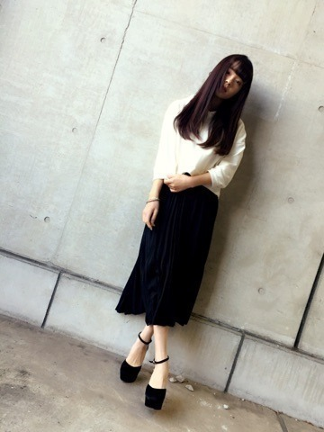
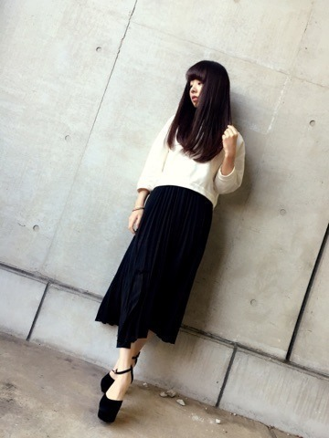
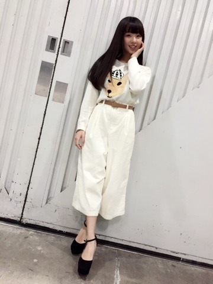
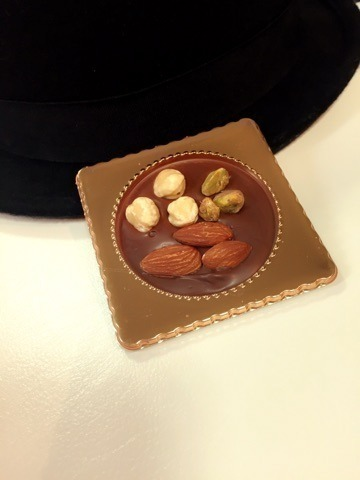

| 2015/01 20 Tue | 川村真洋 755始めたから遊びに きてね。まってます ❤️ まに。 |
こんにちわあ～。
まにです.Rottyです...
3日前...口にヘルペスできました。左上唇に。
わかりますかあ？
ヘルペスよくなる方によるとね，ヘルペスって治るのに2週間かかるらしいね。。
でもさ，今日3日目...ほぼほぼ治りました。！
私の回復力ちょっとすごいかも。❤️
顔に角度つけたら ほぼ分からない？わら
...。
ていう前に気付いたかな？
今日のblogの写真は握手会の時に撮ったものなんだけどね，
メイク変えました。というか ほとんどやってません(/ ・- ・＊)
アイラインもマスカラも最近やってないの。。
散々皆に『まには メイクしなくていいの！』って言われてたので...。
アイシャドウだけやって終了！ めっちゃ楽ちん❤️
今年はナチュラルに生きます。
そしてそして！！！
今回の握手会のまに私服は...❤️

R&Eのヒール
GRLのワンピース
LOWRYR FARMの白トレーナー
やっぱりシンプルな洋服は落ちつきますね。

そしてもう1着のまに私服は❤️...

大好きこの格好。白白コーデ。
大阪でショッピングした時に購入してきました.＊
THE EMPORiUMのセーター
a.g.plus.ガウチョパンツ
犬なのか，シカなのか， カンガルーなのか分からない感じが好き。わら
皆にすごいいじられた。
パンツは 縦にラインが入ってて温かい素材なの。
あっ！ 私755始めました。
是非おじゃましにきてくださいね～
まってまあす❤️
可愛い.

11枚目選抜発表がありました（＾ω＾）
私は選抜ではありません！でも！！！
2015年、私は選抜に負けない位！アンダーメンバーをもっともっともっと大きなグループにして行きたいです。
私達とファンの皆さん全員で、もっと上を目指しましょうヾ(＠⌒ー⌒＠)ノ❤️！！！
よろしくお願いします。